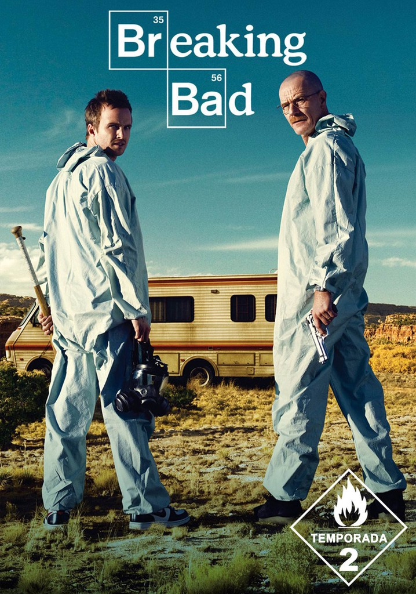
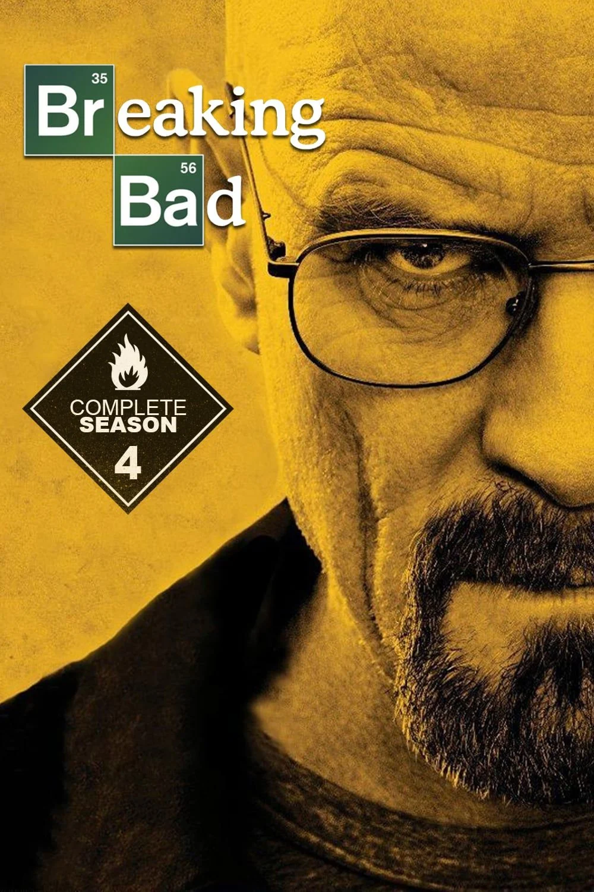
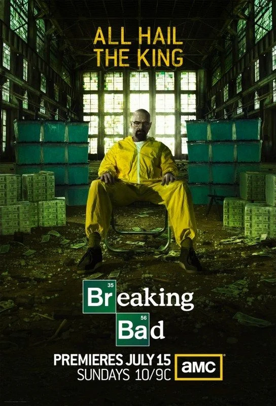

Walter White es diagnosticado con cáncer de pulmón inoperable después de desmayarse en un lavadero de autos. Al darse cuenta de que no tiene suficiente dinero para pagar el tratamiento, y después de participar en una redada antidrogas con su cuñado , el agente de la DEA Hank, Walt recurre a cocinar metanfetamina. Decide asociarse con su antiguo alumno, Jesse. Jesse consigue una caravana de su amigo Combo para cocinar, mientras que Walt diseña una fórmula revolucionaria usando químicos no regulados, creando un producto altamente puro de color azul. Skyler investiga y descubre el historial de Jesse con las drogas, y lo confronta después de que Walt crea una falsa confesión de que Jesse le vendió cannabis . Tras un altercado con el cártel mexicano, Walt adopta el seudónimo de "Heisenberg" e intercambia su metanfetamina "azul cielo" con el narcotraficante psicópata Tuco. Hank, junto con el resto de la DEA, se entera de la presencia de Heisenberg en el narcotráfico y comienza a investigar.

Poco después de que Walt y Jesse cierran su primer trato con Tuco, este los secuestra. Tras un día de cautiverio, Hank descubre su paradero y mata a Tuco a tiros. Walt y Jesse se esconden de Hank y nunca son encontrados. Tras la partida de Hank, Walt y Jesse se quedan solos. Mientras Jesse regresa a la ciudad sin dar explicaciones, Walt finge entrar en un estado de fuga . Walt permanece hospitalizado hasta que los médicos se aseguran de que no volverá a ocurrir. Finalmente, Walt le confiesa a su médico que fingió el estado de fuga, aunque no le cuenta lo que realmente sucedió con Tuco, inventando en cambio una historia sobre una huida para evitar a su familia. Hank interroga a Jesse, pero este nunca es arrestado. Tras un intento fallido de Walter y Jesse por iniciar su propio negocio, que resultó en el arresto y asesinato de dos amigos de Jesse, Badger y Combo respectivamente, Walt contrata al abogado corrupto Saul Goodman, quien los conecta con el influyente narcotraficante Gus Fring y el intermediario Mike Ehrmantraut. Jesse es expulsado de la casa de su tía Ginny por sus padres y busca rápidamente alojamiento. Encuentra un apartamento administrado por Jane Margolis. Poco después de mudarse, Jesse comienza a salir con Jane. Tras una recaída, Jane lo introduce en el mundo de la heroína. Después de vender un cargamento a Gus, Walt se niega a pagarle a Jesse su parte del dinero, sospechando que lo usará para drogas, pero Jane amenaza con revelar el secreto de Walt al público si lo hace. Walt regresa con Jesse para disculparse, pero en su lugar los encuentra a él y a Jane inconscientes por la sobredosis de heroína. Aunque es capaz de intervenir y salvarle la vida, Walter permite que Jane, inconsciente, muera asfixiada por su propio vómito debido a una sobredosis. Jesse se despierta a la mañana siguiente y encuentra a Jane a su lado, muerta. Llega para eliminar cualquier rastro de su consumo de heroína, y un traumatizado Jesse ingresa a rehabilitación. Días después de la muerte de Jane, presencia una colisión aérea entre dos aviones; resultado de que el padre de Jane, Donald Margolis, controlador de tráfico aéreo, regresara al trabajo antes de tiempo a pesar de seguir afligido por la muerte de su hija. Tras ser anestesiado para una cirugía de cáncer, Walt revela accidentalmente que tenía dos teléfonos celulares. Esto lleva a Skyler a investigar más a fondo y finalmente descubre todas las mentiras de Walt. Skyler confronta a Walt y solicita el divorcio.

Tras ser confrontado por Skyler, Walt se retira brevemente del narcotráfico. A pesar de su retiro, Gus logra convencerlo de que vuelva a cocinar, con un laboratorio nuevo y más grande. Ahora, tras ser expulsado de su casa, Walt se muda a un apartamento. Skyler lo visita y Walt finalmente le confiesa su vinculación con el negocio de las drogas. Mientras tanto, Jesse, con la ayuda de Saul, recupera la casa de sus padres. Por esas fechas, Saul contrata a Mike para que instale sistemas de vigilancia en la residencia White. La investigación de Hank lo lleva de vuelta a Jesse a través del fallecido Combo. No encuentra pruebas, pero en un arrebato de ira, ataca a Jesse creyendo que lo engañó haciéndole creer que su esposa, Marie, había sufrido un accidente de coche. Poco después, es suspendido de la DEA. Walt, para evitar que Jesse presente cargos contra Hank, obliga a Gus a reemplazar a Gale con Jesse como su asistente de laboratorio. Hank es atacado por los primos vengativos de Tuco y los mata, quedando paralizado a consecuencia del ataque. Ambos primos mueren tarde o temprano. Jesse conoce a Andrea Cantillo en rehabilitación y pronto comienzan una relación. Ella es la hermana mayor de Tomás, el asesino de Combo. También tiene un hijo pequeño, Brock. El comportamiento de Jesse se vuelve errático y Walt se ve obligado a matar a dos de los traficantes de drogas de Gus para protegerlo. Después de que un Gus enfurecido ordena que los maten, Walt convence a Jesse de matar a Gale para que Gus no pueda reemplazarlos. Tras descubrir el historial de consumo de drogas de Gale, Hank sospecha que se trata de Heisenberg. Postrado en cama la mayor parte del tiempo, comienza a investigar los diarios de Gale. Al leerlos con Walt, encuentra las iniciales "WW" y, en tono de broma, dice que estaban dirigidas a él. Walt lo descarta como una referencia al escritor Walt Whitman , uno de los autores favoritos de Gale.

Gus refuerza la seguridad en el laboratorio tras la muerte de Gale, mientras que él y Mike siembran la discordia entre Walt y Jesse, obligando a Jesse a ser su único cocinero y, al mismo tiempo, eliminando al cártel mexicano. Skyler acepta que Walt prepare metanfetamina y conspira con Saul para blanquear las ganancias comprando el lavadero de autos donde Walt trabajaba. Hank, en recuperación, relaciona la muerte de Gale con Gus y el narcotráfico. Walt engaña a Jesse para que se vuelva contra Gus, envenenando a Brock con una planta de lirio de los valles y convenciendo a Héctor Salamanca, el último miembro vivo del cártel, de detonar una bomba durante una reunión con Gus en la residencia de ancianos, matándolos a ambos.

Tras la muerte de Gus, Walt, Jesse y Mike inician un nuevo negocio de metanfetamina. Cuando su cómplice Todd asesina a un niño testigo durante un robo de metilamina, Jesse y Mike venden su parte a Declan, otro distribuidor. Walter produce metanfetamina para Declan, y Lydia, antigua socia de Gus, comienza la distribución en Europa, que tiene tanto éxito que Walter amasa 80 millones de dólares , que entierra en la reserva indígena Tohajiilee . Después de que Walter mata a Mike durante una discusión, Lydia le da los nombres de los hombres de Mike que están encarcelados. Walt contrata al tío de Todd, Jack, y a su banda para matar a los socios de Mike; también matan a Declan. Hank descubre que Walt es Heisenberg y comienza a reunir pruebas. Recurre a Jesse, quien le ayuda a rastrear el dinero de Walt hasta la reserva. Cuando Walt es arrestado, llega la banda de Jack. Matan a Hank, capturan a Jesse y se llevan la mayor parte del dinero de Walt. Walt se ve obligado a huir solo con el dinero restante. Tras meses escondido, Walt planea entregarse, pero cambia de opinión después de que Elliott y Gretchen minimicen públicamente su participación en la creación de Gray Matter. Walt manipula a Elliott y Gretchen para que le den sus ganancias a Walter Jr. Después de envenenar a Lydia, Walt se reconcilia con Skyler por su criminalidad. Todd, Jack y sus hombres mueren durante un tiroteo orquestado por Walt, pero Walt también resulta herido. Jesse es liberado y Walt sucumbe a sus heridas.